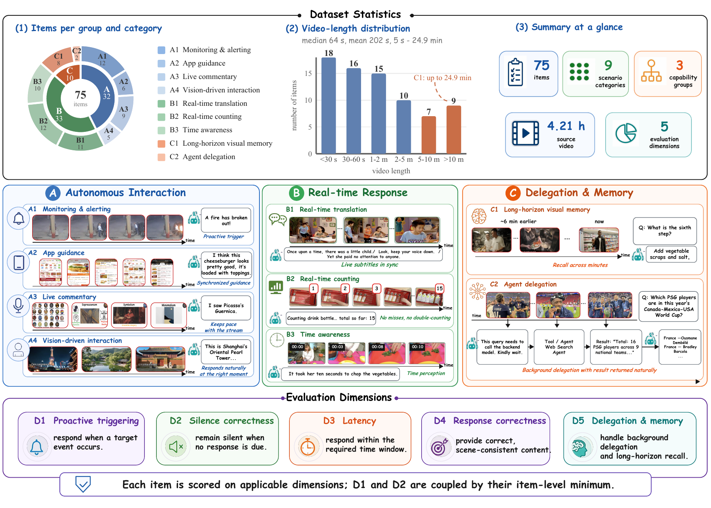
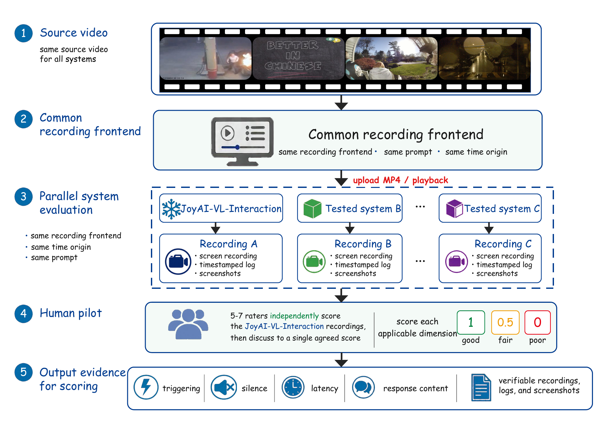
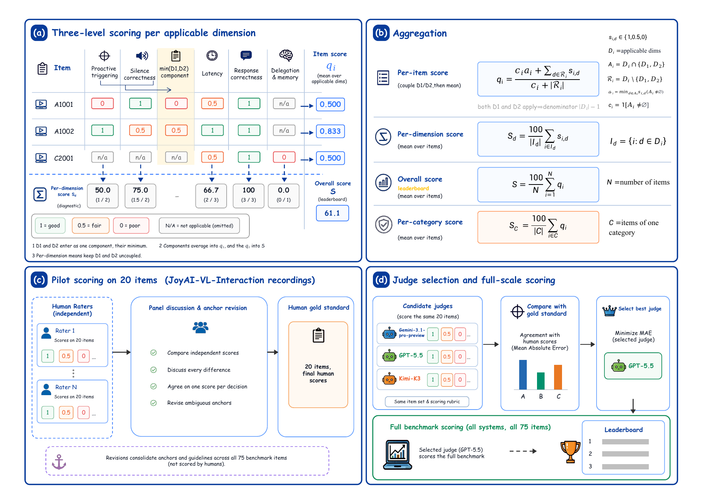
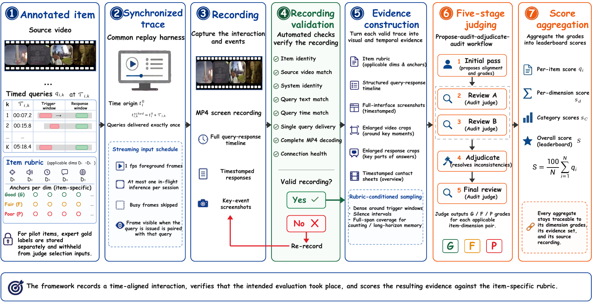

A Autonomous interaction
32 items
- A1 Monitoring & alerting 12
- A2 App guidance 6
- A3 Live commentary 9
- A4 Vision-driven interaction 5
Trajectory-centric streaming evaluation
Evaluating Human-Perceived Interaction Trajectories in Streaming Video Systems
SVI-Bench measures proactive triggering, correct silence, latency, response quality, and long-horizon memory on the same live video timeline.
Open workflow Auditable evidence Resumable evaluation
The benchmark
A streaming assistant observes continuously. It must detect a relevant event, decide whether a response is warranted, answer within the required window, and preserve context over time. SVI-Bench makes each failure mode visible.

Anchored rubric
Select a dimension to see what the Judge measures.
Evaluation question
Match each annotated event with one valid response—without misses, premature fires, or duplicate triggering.
Evaluation protocol
Every configuration receives the same local MP4, task prompt, query schedule, foreground frame schedule, recording frontend, and scoring rule. Native streaming sessions, memory, and serving paths remain system-specific.

Reward-hacking-resistant aggregation
Independent D1 and D2 averages reward degenerate behavior. A mostly silent system can appear excellent on silence correctness; a constantly talking system can do the reverse. SVI-Bench couples D1 and D2 inside each item before aggregation.
Per-item interaction component
Example when all five dimensions apply
Official leaderboard score
The official score is not min(mean(D1), mean(D2))
and not a five-dimension mean. Coupling happens per item, so
success on one item cannot compensate for the opposite failure
on another.

375-recording evaluation
Five deployed configurations were evaluated on all 75 items. The Overall score is the sole ranking metric; category, dimension, and latency-removed views are diagnostic.
Official leaderboard
Item-level D1/D2 coupling · higher is better
Overall is the only leaderboard score. Values are computed before rounding.
JoyAI-VL-Interaction leads the strongest comparison configuration by 28.17 points.
No evaluated system exceeds 30 on proactive triggering, exposing a shared weakness.
The large split shows why silence correctness cannot be rewarded independently.
Official results
| Rank | Deployed configuration | Overall S ↑ | S without D3 ↑ |
|---|---|---|---|
| 1 | JoyAI-VL-Interaction | 53.61 | 39.67 |
| 2 | MOSS-VL-Realtime | 25.44 | 26.33 |
| 3 | MiniCPM-O-4.5-9B | 21.33 | 20.44 |
| 4 | Doubao Seed 2.1 Pro | 21.22 | 29.44 |
| 5 | Mage-VL | 19.50 | 21.78 |
S without D3 preserves item-level D1/D2 coupling before removing latency. It is a sensitivity analysis, not a second leaderboard.
| System | A1 | A2 | A3 | A4 | B1 | B2 | B3 | C1 | C2 |
|---|---|---|---|---|---|---|---|---|---|
| JoyAI-VL-Interaction | 65.28 | 41.67 | 44.44 | 46.67 | 36.36 | 48.61 | 67.08 | 68.75 | 75.00 |
| Doubao Seed 2.1 Pro | 45.83 | 22.22 | 12.96 | 40.00 | 0.00 | 12.50 | 30.83 | 16.67 | 0.00 |
| Mage-VL | 18.06 | 5.56 | 20.37 | 50.00 | 6.06 | 22.22 | 37.92 | 8.33 | 0.00 |
| MOSS-VL-Realtime | 37.50 | 8.33 | 37.04 | 50.00 | 0.00 | 22.22 | 40.83 | 18.75 | 0.00 |
| MiniCPM-O-4.5-9B | 23.61 | 33.33 | 22.22 | 6.67 | 18.18 | 18.06 | 36.67 | 12.50 | 0.00 |
Human-calibrated Judge
A 20-item pilot covering all nine scenarios provides 71 dimension-level expert labels. The selected five-stage Judge is applied unchanged to the full benchmark.
on the 1 / 0.5 / 0 scale
59 of 71 labels
69 of 71 labels
human–Judge agreement
Scope: the pilot contains JoyAI-VL-Interaction recordings. Cross-system human annotation remains necessary to quantify Judge generalization across response styles and latency regimes.
InteractFlow
Recording and judging are deliberately decoupled. Valid traces can be inspected or rejudged without rerunning the evaluated model; invalid traces return to bounded recording recovery.

Reproduce with one entrypoint
The campaign supervisor records all enabled systems, verifies every accepted trace, constructs label-free Judge manifests, and runs all five judging stages. Completed, validated artifacts are reused after interruption.
$ git clone https://github.com/YidanHAI/SVI-Bench.git
$ cd SVI-Bench
# Install the lightweight orchestration environment
$ python3 -m venv .venv
$ source .venv/bin/activate
$ python -m pip install --require-hashes -r requirements.lock
$ npm ci
# Configure private endpoints and credentials
$ cp .env.example .env
$ chmod 600 .env
# Validate, start, and monitor
$ bash scripts/run_all.sh validate
$ bash scripts/run_all.sh start
$ bash scripts/run_all.sh statusResources
Citation
Please cite the accompanying manuscript and link to this repository.
@misc{lin2026svibench,
title = {SVI-Bench: Evaluating Human-Perceived Interaction Trajectories
in Streaming Video Systems},
author = {Jianan Lin and Yidan Huang and Xiaoyi Qiao and Dongyi Lv and
Yicheng Wang and Shi Suo and Shiying Fan and Yifei Li and
Dingyu Yao and Chenxu Yang and Junhao Zhou and Chuanyu Qin and
Qingyi Si and Nan Duan and Jiaqi Wang},
year = {2026},
url = {https://github.com/YidanHAI/SVI-Bench}
}